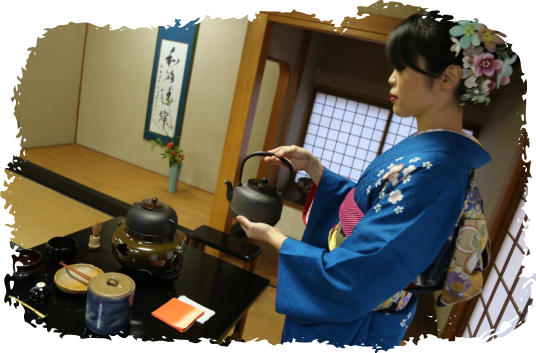

La primera Ceremonia del Té, se realizó el martes 23 de agosto de 1988 durante la inauguración del CPJ, estuvo a cargo de la señora Keiko de Toyotoshi como anfitriona y las señoras Yoko Hirai, Yasuko Moriya y Mimie de Yamamoto como ayudantes.
La ceremonia del té japonés, está considerada como un regalo impagable que el anfitrión, hace a los invitados. Ofrecer una ceremonia de té, significa hospitalidad. De igual forma, los invitados deben agradecer y valorar con honores el haber participado en la ceremonia.
